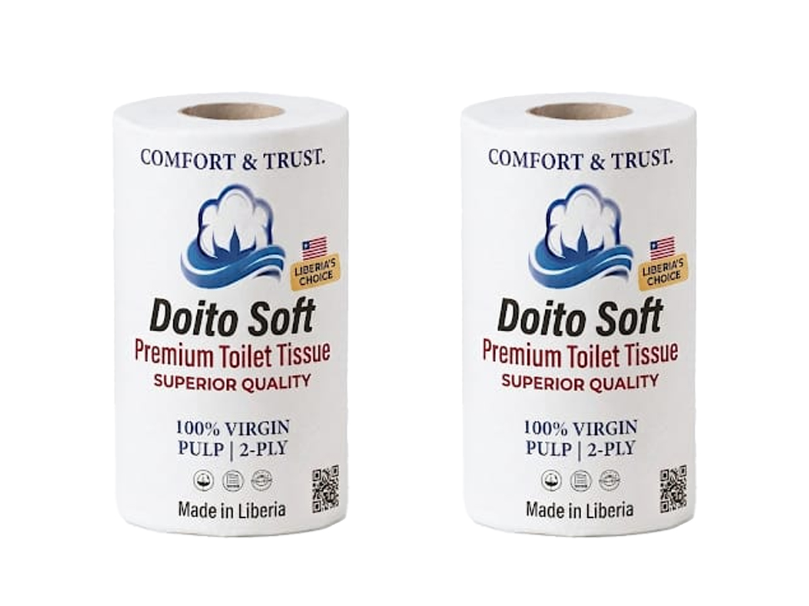
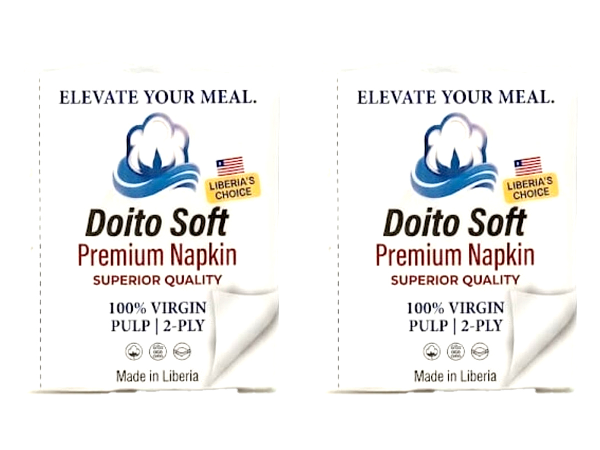
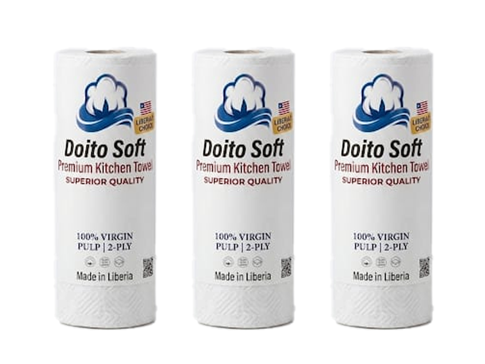

Welcome to the New World of Advanced Technology In Liberia

Doito Soft Premium Tissue Inc.
LIBERIAN INDUSTRIAL EXCELLENCE
Our PTP technology ensures each sheet is thick, soft, and durable. Experience the superior strength of our advanced bonding technology, designed for a luxury feel in every use.
Bringing SUPERIOR QUALITY to every home. Our tissue is engineered for those who demand luxury and strength.
Our signature Point-to-Point (PTP) bonding creates a quilted texture that traps air between layers. This makes our 2-ply tissue noticeably thicker, softer, and more absorbent.
We use only premium fibers to ensure our tissue is hypoallergenic and lint-free. The gentle choice for sensitive skin.
LIBERIA'S CHOICE • SUPREME QUALITY
Welcome to the New World of Advanced Technology In Liberia
LIBERIAN INDUSTRIAL EXCELLENCE
Under the direct supervision of Senior Electrical Engineer Eric Doito, our facility is engineered to produce the highest gram-density tissue in the West African Region. We don't just manufacture; we calibrate every sheet for Supreme Quality. Our advanced production systems ensure that every roll delivered to your home or business is identical in strength, softness, and purity.

"The new standard for quality. Doito Soft Premium Tissue is crafted with a high-gram density, ensuring every sheet is thicker, stronger, and more absorbent. Experience the soft, cloth-like feel that sets the gold standard in Liberia."
Packaging: 2, 4, 6, and 12-Roll Packs

"Experience the Doito Soft difference. Premium quality napkins for those who settle for nothing but the best. Engineered for elegance and maximum absorbency."
"By bringing advanced manufacturing technology to Liberia, Doito Soft Premium Tissue Inc. is committed to leading the charge in import substitution. We are creating skilled jobs for Liberian workers and ensuring that our nation has access to world-class hygiene products made right here in Liberia."

"Soft enough for your hands, tough enough for your counters. Experience the premium texture of a towel that handles every mess with ease. Quality you can feel in every sheet."
"The ultimate industrial solution. Our Jumbo Max Premium rolls are engineered for high-traffic commercial environments, delivering maximum sheet count without compromising the signature Doito Soft high-gram density and purity."
Industrial & Commercial Grade